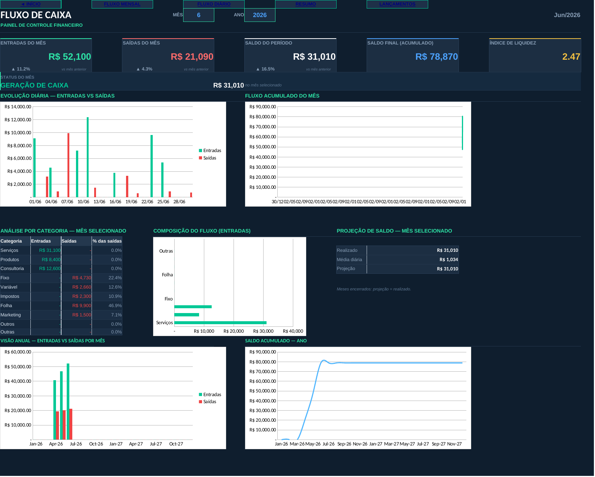
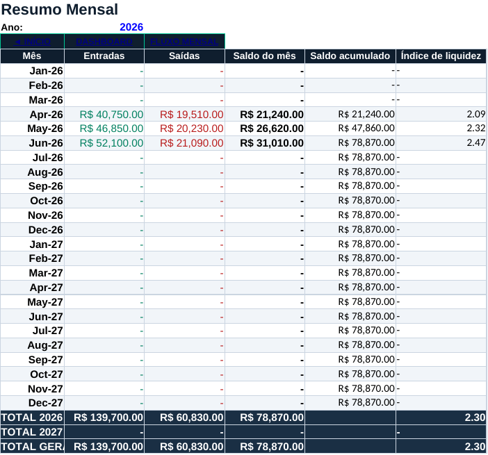
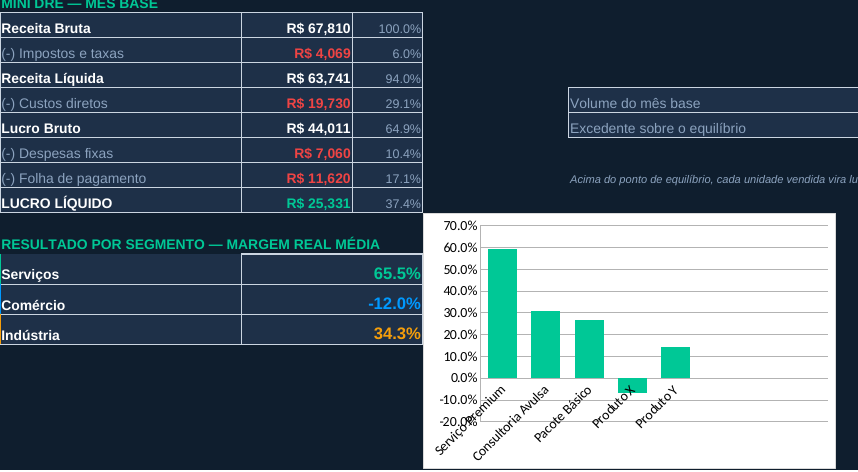

Planilhas Financeiras com Dashboard — Fluxo de Caixa e Precificação
ExcelDashboardFórmulas avançadasDRE
Sobre o projeto
Sistema financeiro completo em duas planilhas integradas, entregue a cliente e avaliado com nota máxima. Não é modelo de internet: cada aba foi construída pro fluxo real do negócio, com navegação interna entre painéis, instruções de uso na própria planilha e fórmulas que se atualizam sozinhas conforme os lançamentos entram.
Fluxo de Caixa24 meses de lançamentos (dois anos completos), categorias configuráveis, resumo mensal com saldo acumulado e índice de liquidez, visão horizontal por categoria, fluxo diário do mês selecionado e dashboard com 5 gráficos.
Precificação de Produtos e ServiçosDespesas fixas, folha de pagamento com encargos, cadastro de produtos, três módulos de preço (serviços por hora técnica, comércio e indústria), DRE mensal, simulação de cenários pessimista/base/otimista e dashboard de margens.
O objetivo era o dono do negócio responder três perguntas sem contador e sem sistema pago: quanto entra e sai, quanto custa cada produto de verdade, e por quanto precisa vender pra ter lucro.

Dashboard do Fluxo de Caixa — KPIs do mês, evolução diária, análise por categoria, projeção de saldo e visão anual (dados ilustrativos)

Resumo Mensal — entradas, saídas, saldo do mês, saldo acumulado e índice de liquidez, mês a mês (dados ilustrativos)

Precificação — mini DRE do mês base e margem real média por segmento (dados ilustrativos)